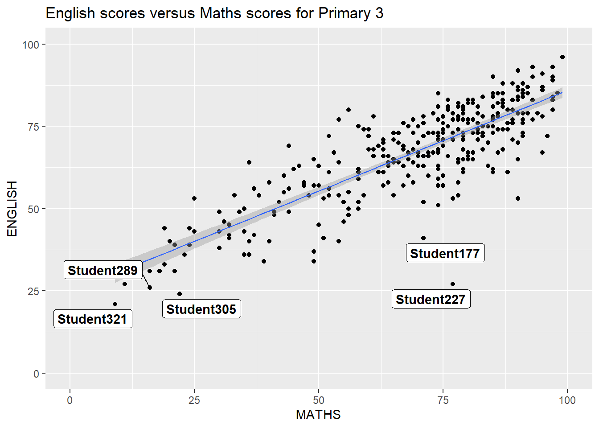
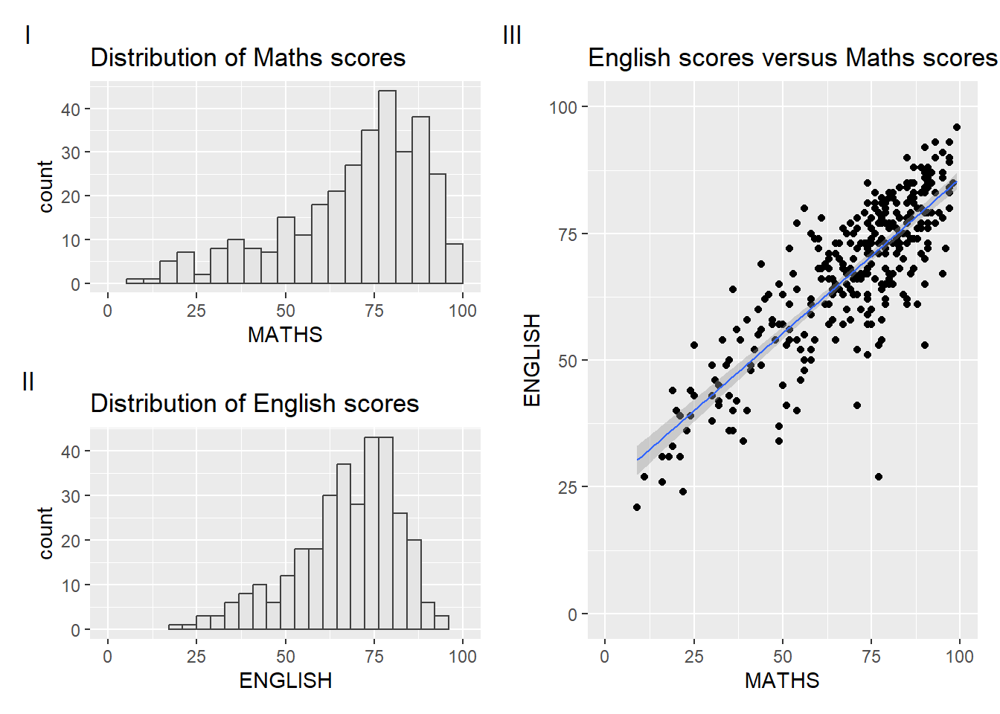
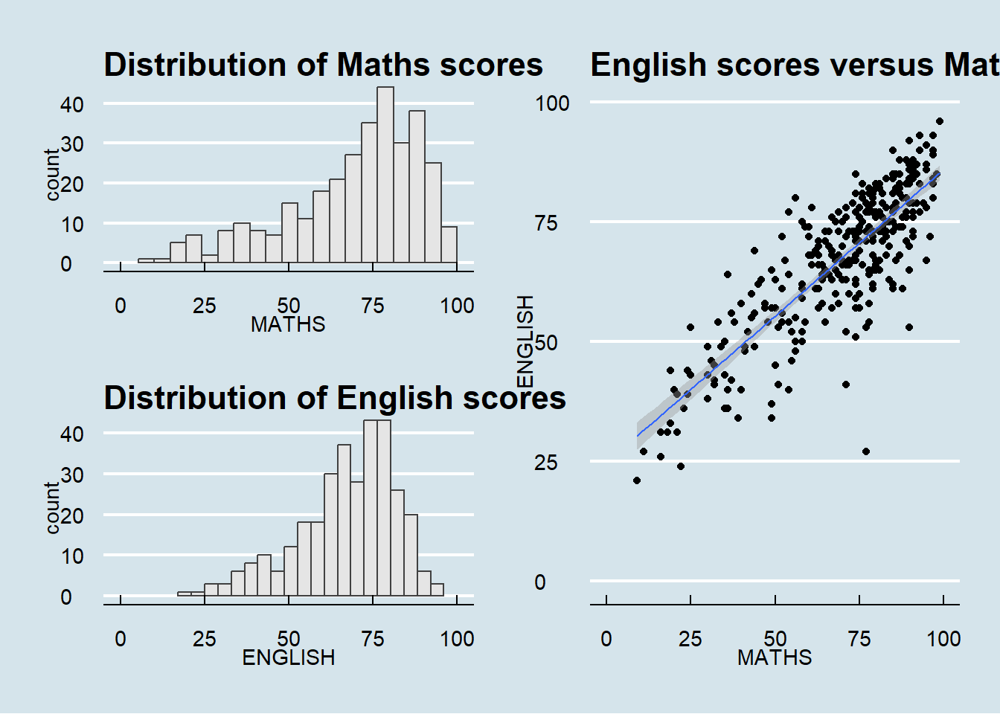
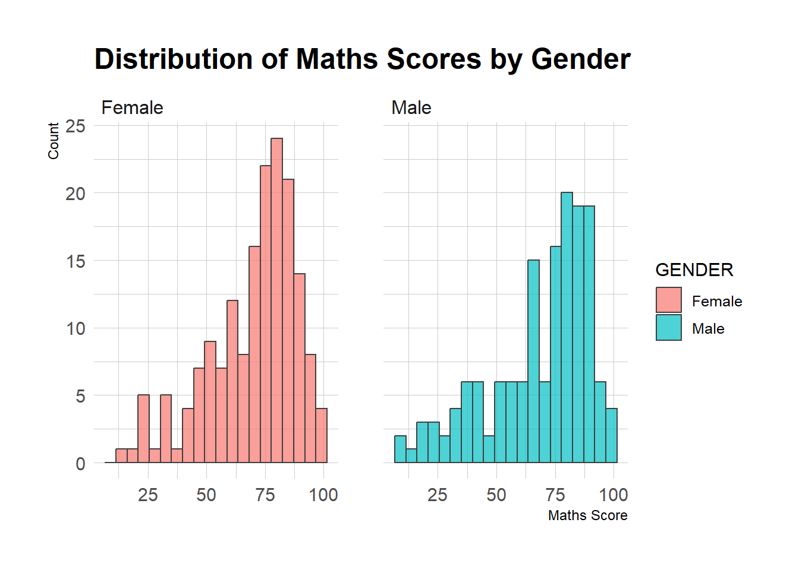
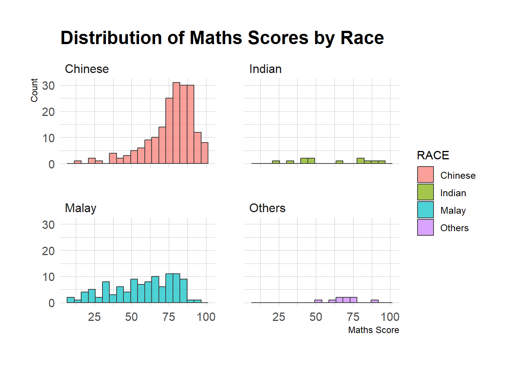
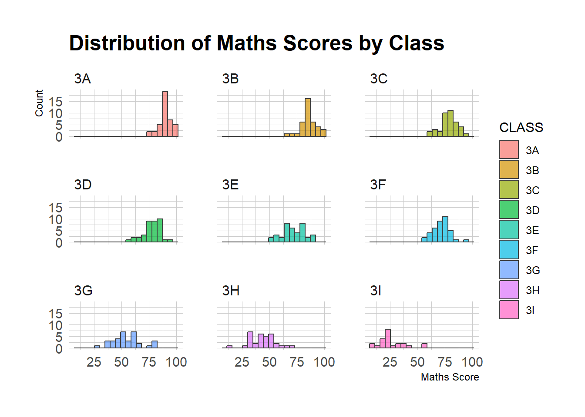
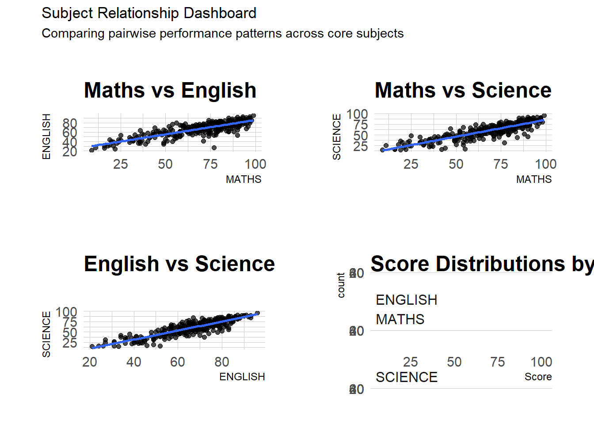
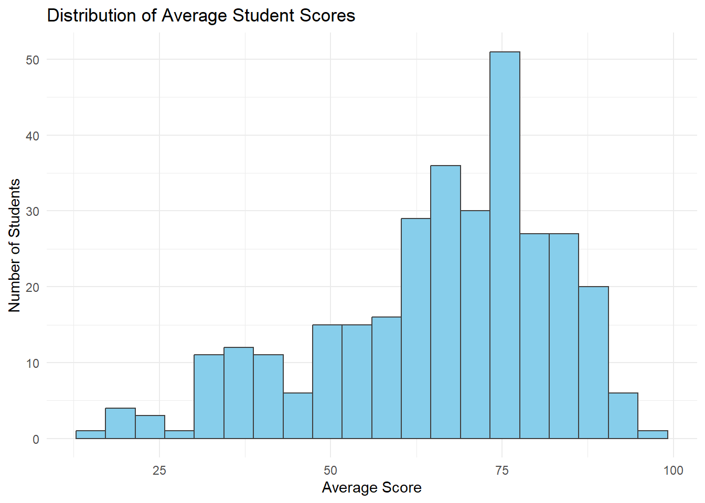
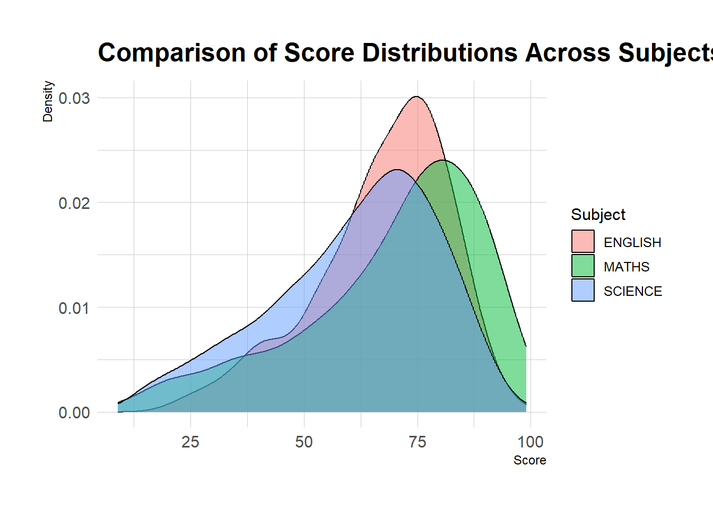
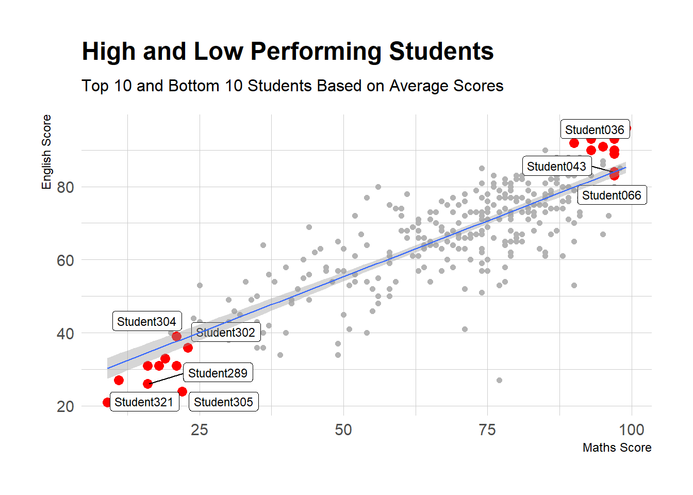

pacman::p_load(ggrepel, patchwork,
ggthemes, hrbrthemes,
tidyverse) Hands-on Exercise 1 - Beyond ggplot2 Fundamentals
2.1 Overview (Learning Objectives)
In this chapter, we will learn more on the ggplot2 extensions for creating more elegant and effective statistical graphics. This includes: - control the placement of annotation on a graph by using functions provided in ggrepel package, - create professional publication quality figure by using functions provided in ggthemes and hrbrthemes packages, - plot composite figure by combining ggplot2 graphs by using patchwork package.
2.2 Getting Started
2.2.1 Installing and loading the required libraries
In this exercise, 4 packages will be used aside from tidyberse. This includes: - ggrepel: an R package provides geoms for ggplot2 to repel overlapping text labels. - ggthemes: an R package provides some extra themes, geoms, and scales for ‘ggplot2’. - hrbrthemes: an R package provides typography-centric themes and theme components for ggplot2. - patchwork: an R package for preparing composite figure created using ggplot2.
We will check if these packages have been installed by running the below R codes
2.2.2 Importing data
exam_data <- read_csv("data/Exam_data.csv")2.3 Beyond ggplot2 Annotation: ggrepel
We can observe a large number of data points based on the below R codes
ggplot(data=exam_data,
aes(x= MATHS,
y=ENGLISH)) +
geom_point() +
geom_smooth(method=lm,
size=0.5) +
geom_label(aes(label = ID),
hjust = .5,
vjust = -.5) +
coord_cartesian(xlim=c(0,100),
ylim=c(0,100)) +
ggtitle("English scores versus Maths scores for Primary 3")
2.3.1 Working with ggrepel
We use ggrepel to repel overlapping text as shown below
ggplot(data=exam_data,
aes(x= MATHS,
y=ENGLISH)) +
geom_point() +
geom_smooth(method=lm,
size=0.5) +
geom_label_repel(aes(label = ID),
fontface = "bold") +
coord_cartesian(xlim=c(0,100),
ylim=c(0,100)) +
ggtitle("English scores versus Maths scores for Primary 3")
2.4 Beyond ggplot2 Themes
We can change the themes of our plots: Click here for more details:
ggplot(data=exam_data,
aes(x = MATHS)) +
geom_histogram(bins=20,
boundary = 100,
color="grey25",
fill="grey90") +
theme_gray() +
ggtitle("Distribution of Maths scores") 
2.4.1 Working with ggtheme package
ggthemes provides ‘ggplot2’ themes that replicate the look of plots
ggplot(data=exam_data,
aes(x = MATHS)) +
geom_histogram(bins=20,
boundary = 100,
color="grey25",
fill="grey90") +
ggtitle("Distribution of Maths scores") +
theme_economist()
2.4.2 Working with hrbthemes package
ggplot(data=exam_data,
aes(x = MATHS)) +
geom_histogram(bins=20,
boundary = 100,
color="grey25",
fill="grey90") +
ggtitle("Distribution of Maths scores") +
theme_ipsum()
The second goal centers around productivity for a production workflow. In fact, this “production workflow” is the context for where the elements of hrbrthemes should be used. Click here to find out more
ggplot(data=exam_data,
aes(x = MATHS)) +
geom_histogram(bins=20,
boundary = 100,
color="grey25",
fill="grey90") +
ggtitle("Distribution of Maths scores") +
theme_ipsum(axis_title_size = 18,
base_size = 15,
grid = "Y")
NoteWhat can we learn from the code chunk below?
- axis_title_size argument is used to increase the font size of the axis title to 18,
- base_size argument is used to increase the default axis label to 15, and
- grid argument is used to remove the x-axis grid lines.
#2.5 Beyond Single Graph We use ggplot2 extentions to compose figure with multiple graphs.
p1 <- ggplot(data=exam_data,
aes(x = MATHS)) +
geom_histogram(bins=20,
boundary = 100,
color="grey25",
fill="grey90") +
coord_cartesian(xlim=c(0,100)) +
ggtitle("Distribution of Maths scores")
p2 <- ggplot(data=exam_data,
aes(x = ENGLISH)) +
geom_histogram(bins=20,
boundary = 100,
color="grey25",
fill="grey90") +
coord_cartesian(xlim=c(0,100)) +
ggtitle("Distribution of English scores")
p3 <- ggplot(data=exam_data,
aes(x= MATHS,
y=ENGLISH)) +
geom_point() +
geom_smooth(method=lm,
size=0.5) +
coord_cartesian(xlim=c(0,100),
ylim=c(0,100)) +
ggtitle("English scores versus Maths scores for Primary 3")2.5.1 Creating Composite Graphics: pathwork methods
In this sectiom, we will learn about ggplot2 extension called patchwork, specially designed for combining separate ggplot2 graphs into a single figure.
2.5.2 Combining two ggplot2 graphs
This example shows a composite of two histogram created side by side.
p1 + p2
2.5.3 Combining three ggplot2 graphs
We can plot more complex composite by using appropriate operators. For example, the composite figure below is plotted by using: - “/” operator to stack two ggplot2 graphs, - “|” operator to place the plots beside each other, - “()” operator the define the sequence of the plotting.
(p1 / p2) | p3
2.5.4 Creating a composite figure with tag
To identify subplots in text, patchwork also provides auto-tagging capabilities as shown in the figure below.
((p1 / p2) | p3) +
plot_annotation(tag_levels = 'I')
2.5.5 Creating figure with insert
With inset_element() of patchwork, we can place one or several plots or graphic elements freely on top or below another plot.
p3 + inset_element(p2,
left = 0.02,
bottom = 0.7,
right = 0.5,
top = 1)
2.5.6 Creating a composite figure by using patchwork and ggtheme
Combining patchwork and theme_economist() of ggthemes package discussed earlier.
patchwork <- (p1 / p2) | p3
patchwork & theme_economist()
Additional Analysis (1) - Comparing Maths Score by Gender, Race, Class
ggplot(data = exam_data,
aes(x = MATHS,
fill = GENDER)) +
geom_histogram(bins = 20,
alpha = 0.7,
color = "grey25") +
facet_wrap(~ GENDER) +
labs(
title = "Distribution of Maths Scores by Gender",
x = "Maths Score",
y = "Count"
) +
theme_ipsum()
ggplot(data = exam_data,
aes(x = MATHS,
fill = RACE)) +
geom_histogram(bins = 20,
alpha = 0.7,
color = "grey25") +
facet_wrap(~ RACE) +
labs(
title = "Distribution of Maths Scores by Race",
x = "Maths Score",
y = "Count"
) +
theme_ipsum()
ggplot(data = exam_data,
aes(x = MATHS,
fill = CLASS)) +
geom_histogram(bins = 20,
alpha = 0.7,
color = "grey25") +
facet_wrap(~ CLASS) +
labs(
title = "Distribution of Maths Scores by Class",
x = "Maths Score",
y = "Count"
) +
theme_ipsum()
Additional Analysis (2) - Comparing subjects:
- Maths vs English
- Maths vs Science
- English vs Science
p1 <- ggplot(exam_data, aes(MATHS, ENGLISH)) +
geom_point(alpha = 0.7) +
geom_smooth(method = "lm", se = FALSE) +
labs(title = "Maths vs English") +
theme_ipsum()
p2 <- ggplot(exam_data, aes(MATHS, SCIENCE)) +
geom_point(alpha = 0.7) +
geom_smooth(method = "lm", se = FALSE) +
labs(title = "Maths vs Science") +
theme_ipsum()
p3 <- ggplot(exam_data, aes(ENGLISH, SCIENCE)) +
geom_point(alpha = 0.7) +
geom_smooth(method = "lm", se = FALSE) +
labs(title = "English vs Science") +
theme_ipsum()
p4 <- exam_data %>%
pivot_longer(cols = c(MATHS, ENGLISH, SCIENCE),
names_to = "Subject",
values_to = "Score") %>%
ggplot(aes(x = Score, fill = Subject)) +
geom_histogram(alpha = 0.6, bins = 20, position = "identity") +
facet_wrap(~Subject, ncol = 1) +
theme_ipsum() +
theme(legend.position = "none") +
labs(title = "Score Distributions by Subject")
(p1 | p2) / (p3 | p4) +
plot_annotation(
title = "Subject Relationship Dashboard",
subtitle = "Comparing pairwise performance patterns across core subjects"
)
Additional Analysis (3) - Average Score Across 3 Subjects:
This analysis gives us an overview of how academic performance is distributed among students
exam_data_avg <- exam_data %>%
mutate(AVERAGE = (MATHS + ENGLISH + SCIENCE)/3)
ggplot(data=exam_data_avg,
aes(x=AVERAGE)) +
geom_histogram(bins=20,
fill="skyblue",
color="grey25") +
labs(
title="Distribution of Average Student Scores",
x="Average Score",
y="Number of Students"
) +
theme_minimal()
Additional Analysis (4) - Comparing Subject Score Distributions
exam_long <- exam_data %>%
pivot_longer(cols=c(MATHS, ENGLISH, SCIENCE),
names_to="Subject",
values_to="Score")
ggplot(data=exam_long,
aes(x=Score,
fill=Subject)) +
geom_density(alpha=0.5) +
labs(
title="Comparison of Score Distributions Across Subjects",
x="Score",
y="Density"
) +
theme_ipsum()
Additional Analysis (5) - Identify High and Low Performing Students
This analysis identifies students with the highest and lowest overall performance based on their average scores across Maths, English and Science. The highlighted points represent the top 10 and bottom 10 students in the dataset.
exam_avg <- exam_data %>%
mutate(average_score = (MATHS + ENGLISH + SCIENCE) / 3)
highlight_students <- exam_avg %>%
arrange(desc(average_score)) %>%
slice(c(1:10, (n()-9):n()))
ggplot(exam_avg,
aes(x = MATHS,
y = ENGLISH)) +
geom_point(color = "grey70") +
geom_point(data = highlight_students,
color = "red",
size = 3) +
geom_label_repel(data = highlight_students,
aes(label = ID),
size = 3) +
geom_smooth(method = "lm",
linewidth = 0.5) +
labs(
title = "High and Low Performing Students",
subtitle = "Top 10 and Bottom 10 Students Based on Average Scores",
x = "Maths Score",
y = "English Score"
) +
theme_ipsum()
2.6 Reference
- Patchwork R package goes nerd viral
- ggrepel
- ggthemes
- hrbrthemes
- ggplot tips: Arranging plots
- ggplot2 Theme Elements Demonstration
- ggplot2 Theme Elements Reference Sheet